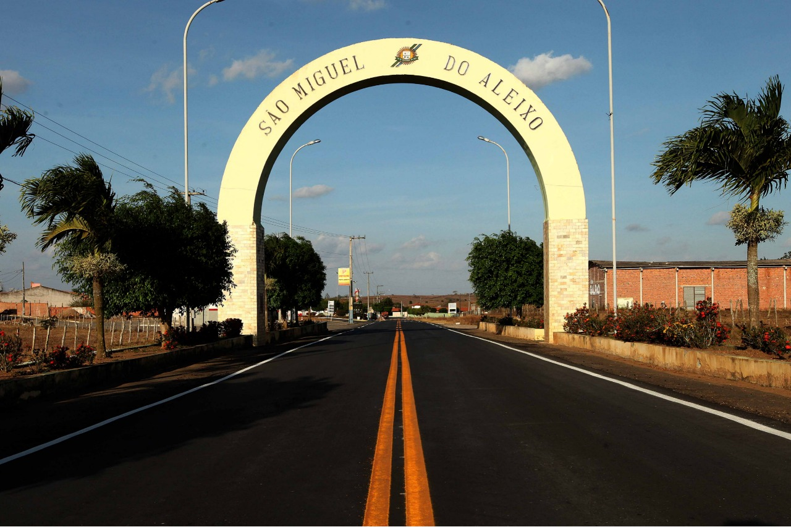

São Miguel do Aleixo
História
O povoado Aleixo teve como principais fundadores Domício José das Graças e Manoel Barreto dos Santos. O núcleo foi crescendo e já contava com cerca de 206 moradias e 600 habitantes quando, em 1963, foi elevado à categoria de Cidade e Sede do Município denominado São Miguel do Aleixo, em homenagem ao pai de seus principais fundadores (Domício José das Graças) e ao primeiro padre da cidade, o padre Aleixo.
A colonização do território está ligada à dos Municípios de Nossa Senhora da Glória e de Nossa Senhora das Dores, dos quais foi desmembrado.
O Município de São Miguel do Aleixo foi instalado em 1965, elevado à categoria de município e distrito com a denominação de São Miguel Aleixo, pela lei estadual nº 1232, de 26-11-1963, desmembrado de Nossa Senhora das Dores, Sede no atual distrito de São Miguel Aleixo.
Constituído do distrito sede. Instalado em 28-02-1965, através dos esforços do ilustre Sr. José Airton das Graças, sendo ele, o primeiro prefeito do município.
fonte: https://pt.wikipedia.org/SaoMigueldoAleixoDados Gerais de acordo com o IBGE
| Prefeito (a) | Jose Gilton Da Costa Meneses |
| Site do município | https://www.saomigueldoaleixo.se.gov.br/ |
| Área territorial | 144.543 km² |
| População estimada | 3.964 pessoas |
| Densidade demográfica | 25,66 hab/km² |
| IDHM | 0,567 |
| PIB per capita | R$ 10.072,68 |